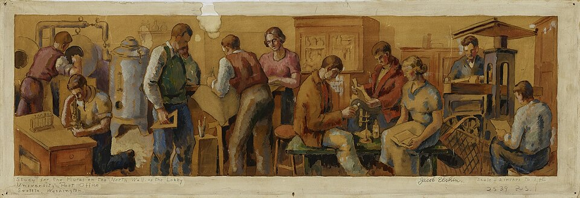

A tip to deal with power games in academia

If you are a postdoctoral researcher, you will quickly realize that research is not the only thing happening in your institute, cluster, or department. In fact, research is likely to be a rare activity compared to administrative duties and teaching. In addition, you will encounter power games among senior researchers that affect your future career. Oftentimes, these power dynamics are not transparent and are usually learned through experience.
This learning process often starts small, yet it escalates quickly. You might receive an email excluding you from the authorship of a paper into which you put intellectual effort. Or, your "shared" lab space might suddenly be occupied by a senior researcher who needs to signal about how hard they work during funding agency visits. Even worse, a principal investigator might suddenly become "enlightened" and enforce a new rule (e.g., allowing only three conference publications in four years) that hinders your competitive advantage when applying for your next job.
These experiences are rarely discussed among junior researchers, but make no mistake: they are ubiquitous in academia. When you are in this position, the threats are not always loud, but most of your colleagues will be aware of the situation. However, they will prefer not to engage, including those who appear to be activists.
Dealing with this can lead to tricky situations. For example, your scholarship renewal paperwork gets "delayed," you find yourself burning out under a heavy teaching load, or worst of all, they point to an article in a legal document (written in language you cannot digest) to remind you who controls your funding (or visa).
(The following paragraphs are based on a sample size of n=1, so they may not apply to all cases.)
If you stand up and challenge them openly, you will not receive a formal email. Instead, you will be invited to a "friendly” 1-to-1 meeting. It might be casual, taking place after hours. Accepting this tactical maneuver allows them to create a space where they can exercise authority over you without witnesses.
So, what is the correct course of action? Use your keyboard and force every interaction into an email. If you ever need to defend yourself against manipulative behavior, you need evidence you can show.
You will soon realize that academics with power are terrified of email trails. They will avoid putting anything in writing that could be distributed to third parties, such as human resources offices, equal opportunity committees, or funding agencies. This strategy is likely your best move to overcome the situation.
You might think these events will not happen to you, but you must accept that you are not an exception. It does not matter if you have a "rock-star" lecturing background. You must realize that they will risk your career to save theirs.
If you need motivation, borrow a (paraphrased) principle from Nassim Taleb: you do not need to absorb harm passively when someone imposes power on you for their own benefit.
References
Image adapted from
Scientists of Today (Wikimedia Commons)
.
_SAAM-1980.133.20_1.jpg){kind=link}